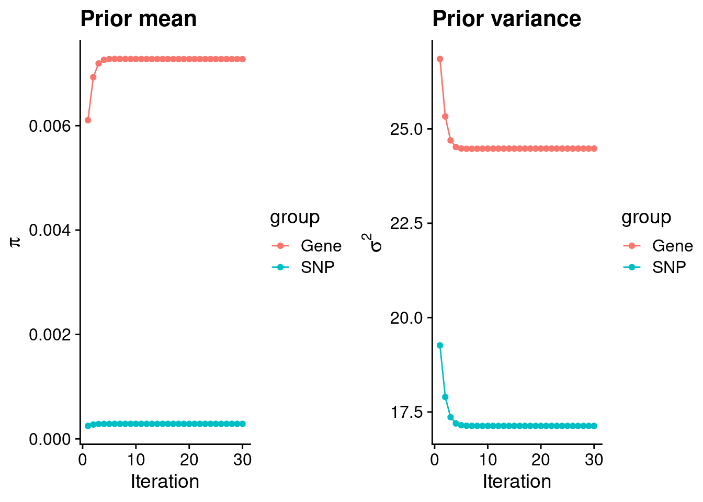
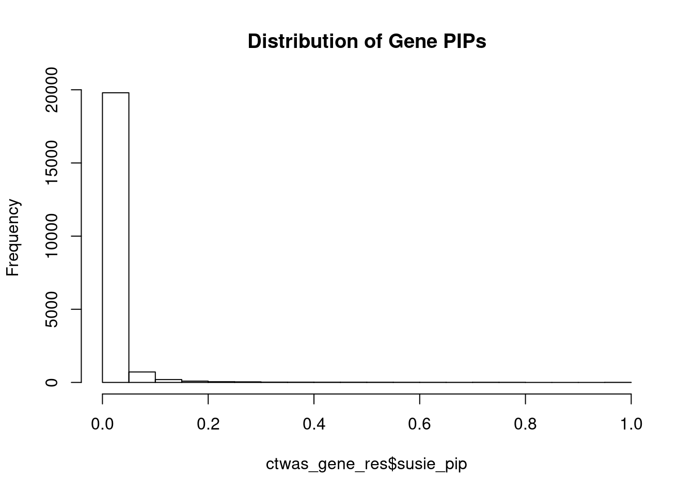
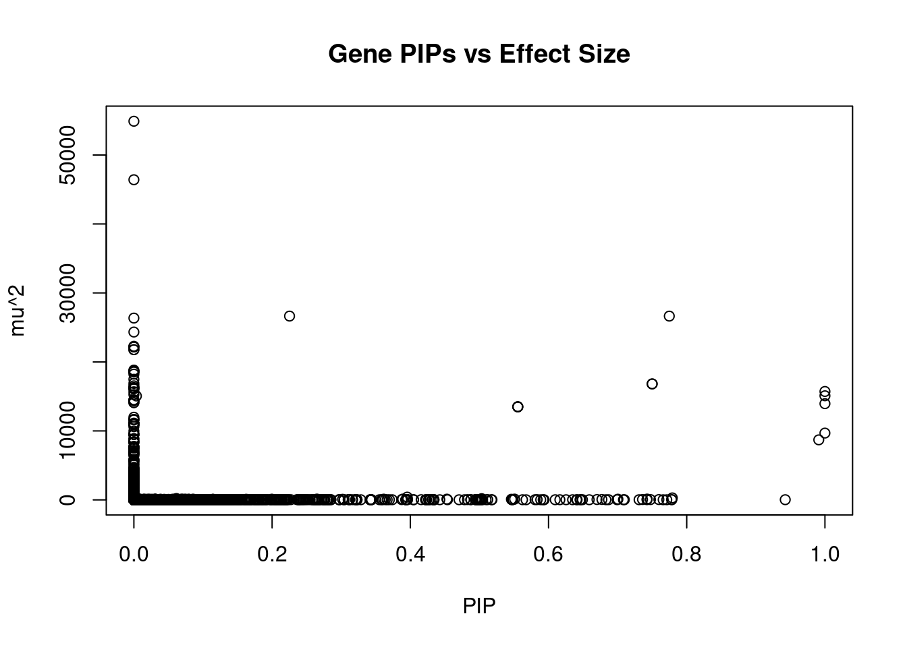
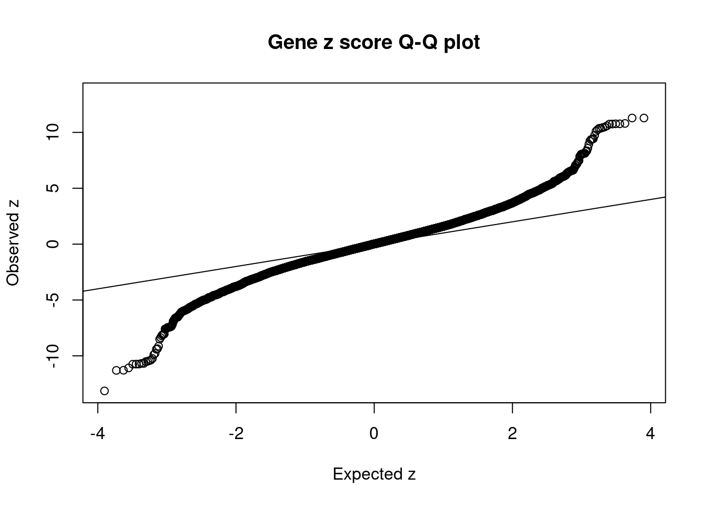
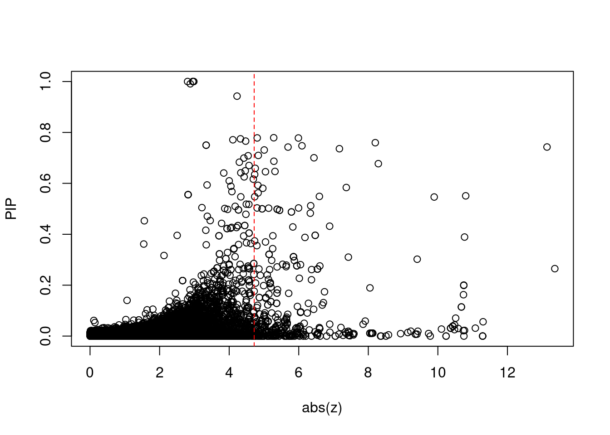
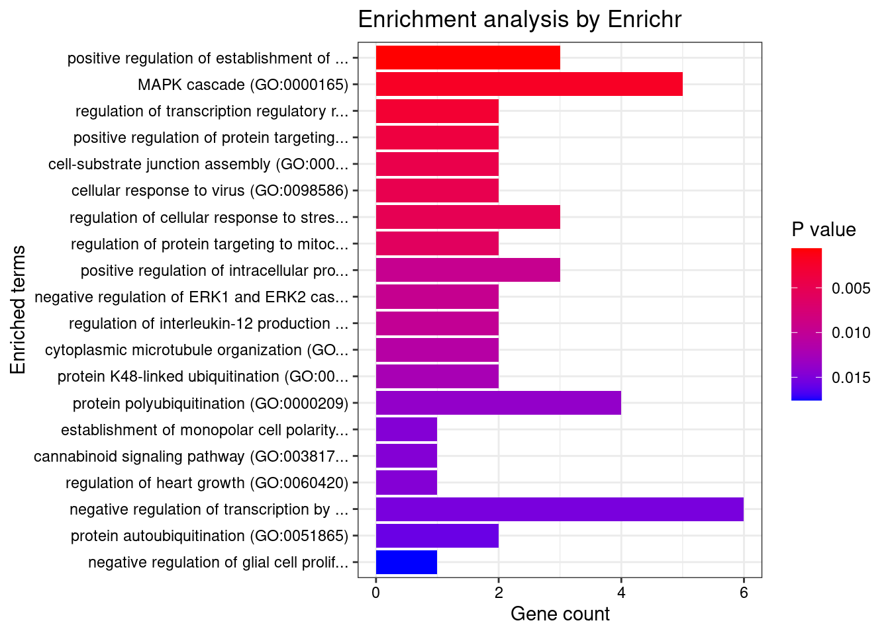
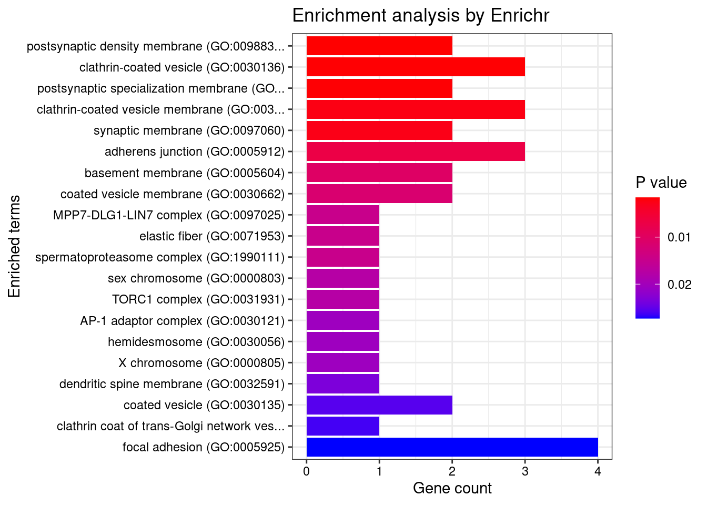
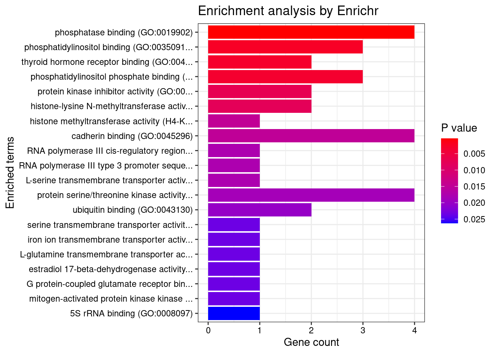
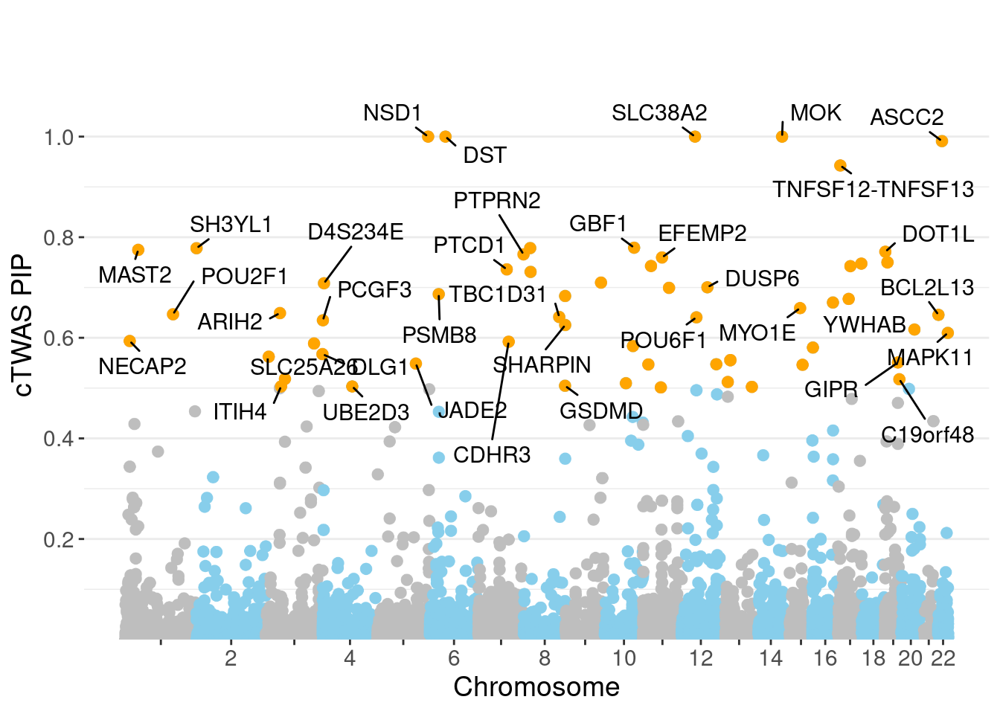
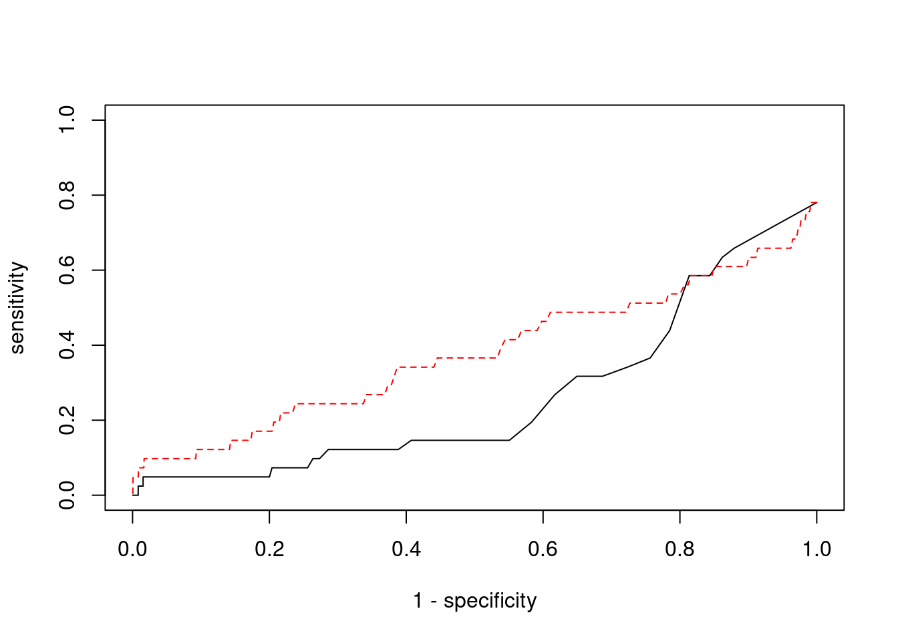

Last updated: 2022-02-22
Checks: 6 1
Knit directory: cTWAS_analysis/
This reproducible R Markdown analysis was created with workflowr (version 1.6.2). The Checks tab describes the reproducibility checks that were applied when the results were created. The Past versions tab lists the development history.
Great! Since the R Markdown file has been committed to the Git repository, you know the exact version of the code that produced these results.
Great job! The global environment was empty. Objects defined in the global environment can affect the analysis in your R Markdown file in unknown ways. For reproduciblity it’s best to always run the code in an empty environment.
The command set.seed(20211220) was run prior to running the code in the R Markdown file. Setting a seed ensures that any results that rely on randomness, e.g. subsampling or permutations, are reproducible.
Great job! Recording the operating system, R version, and package versions is critical for reproducibility.
Nice! There were no cached chunks for this analysis, so you can be confident that you successfully produced the results during this run.
Using absolute paths to the files within your workflowr project makes it difficult for you and others to run your code on a different machine. Change the absolute path(s) below to the suggested relative path(s) to make your code more reproducible.
| absolute | relative |
|---|---|
| /project2/xinhe/shengqian/cTWAS/cTWAS_analysis/data/ | data |
| /project2/xinhe/shengqian/cTWAS/cTWAS_analysis/code/ctwas_config.R | code/ctwas_config.R |
Great! You are using Git for version control. Tracking code development and connecting the code version to the results is critical for reproducibility.
The results in this page were generated with repository version 1058990. See the Past versions tab to see a history of the changes made to the R Markdown and HTML files.
Note that you need to be careful to ensure that all relevant files for the analysis have been committed to Git prior to generating the results (you can use wflow_publish or wflow_git_commit). workflowr only checks the R Markdown file, but you know if there are other scripts or data files that it depends on. Below is the status of the Git repository when the results were generated:
Ignored files:
Ignored: .ipynb_checkpoints/
Untracked files:
Untracked: Rplot.png
Untracked: analysis/.ipynb_checkpoints/
Untracked: analysis/Glucose_Adipose_Subcutaneous.Rmd
Untracked: analysis/Glucose_Adipose_Visceral_Omentum.Rmd
Untracked: analysis/Splicing_Test.Rmd
Untracked: code/.ipynb_checkpoints/
Untracked: code/AF_out/
Untracked: code/BMI_S_out/
Untracked: code/BMI_out/
Untracked: code/Glucose_out/
Untracked: code/LDL_S_out/
Untracked: code/T2D_out/
Untracked: code/ctwas_config.R
Untracked: code/mapping.R
Untracked: code/out/
Untracked: code/run_AF_analysis.sbatch
Untracked: code/run_AF_analysis.sh
Untracked: code/run_AF_ctwas_rss_LDR.R
Untracked: code/run_BMI_analysis.sbatch
Untracked: code/run_BMI_analysis.sh
Untracked: code/run_BMI_analysis_S.sbatch
Untracked: code/run_BMI_analysis_S.sh
Untracked: code/run_BMI_ctwas_rss_LDR.R
Untracked: code/run_BMI_ctwas_rss_LDR_S.R
Untracked: code/run_Glucose_analysis.sbatch
Untracked: code/run_Glucose_analysis.sh
Untracked: code/run_Glucose_ctwas_rss_LDR.R
Untracked: code/run_LDL_analysis_S.sbatch
Untracked: code/run_LDL_analysis_S.sh
Untracked: code/run_LDL_ctwas_rss_LDR_S.R
Untracked: code/run_T2D_analysis.sbatch
Untracked: code/run_T2D_analysis.sh
Untracked: code/run_T2D_ctwas_rss_LDR.R
Untracked: data/.ipynb_checkpoints/
Untracked: data/AF/
Untracked: data/BMI/
Untracked: data/BMI_S/
Untracked: data/Glucose/
Untracked: data/LDL_S/
Untracked: data/T2D/
Untracked: data/TEST/
Untracked: data/UKBB/
Untracked: data/UKBB_SNPs_Info.text
Untracked: data/gene_OMIM.txt
Untracked: data/gene_pip_0.8.txt
Untracked: data/mashr_Heart_Atrial_Appendage.db
Untracked: data/mashr_sqtl/
Untracked: data/summary_known_genes_annotations.xlsx
Untracked: data/untitled.txt
Unstaged changes:
Modified: analysis/BMI_Brain_Cortex.Rmd
Modified: analysis/LDL_Liver_S.Rmd
Modified: analysis/index.Rmd
Note that any generated files, e.g. HTML, png, CSS, etc., are not included in this status report because it is ok for generated content to have uncommitted changes.
These are the previous versions of the repository in which changes were made to the R Markdown (analysis/BMI_Brain_Hippocampus_S.Rmd) and HTML (docs/BMI_Brain_Hippocampus_S.html) files. If you’ve configured a remote Git repository (see ?wflow_git_remote), click on the hyperlinks in the table below to view the files as they were in that past version.
| File | Version | Author | Date | Message |
|---|---|---|---|---|
| Rmd | 1058990 | sq-96 | 2022-02-22 | update |
#number of imputed weights
nrow(qclist_all)[1] 21015#number of imputed weights by chromosome
table(qclist_all$chr)
1 2 3 4 5 6 7 8 9 10 11 12 13 14 15 16
1988 1451 1226 814 817 1108 1205 768 844 935 1262 1061 401 722 697 946
17 18 19 20 21 22
1404 275 1490 695 258 648 #number of imputed weights without missing variants
sum(qclist_all$nmiss==0)[1] 19381#proportion of imputed weights without missing variants
mean(qclist_all$nmiss==0)[1] 0.9222#add z scores to results
load(paste0(results_dir, "/", analysis_id, "_expr_z_gene.Rd"))
ctwas_gene_res$z <- z_gene[ctwas_gene_res$intron_id,]$z
z_snp <- z_snp[z_snp$id %in% ctwas_snp_res$id,]
ctwas_snp_res$z <- z_snp$z[match(ctwas_snp_res$id, z_snp$id)]
#merge gene and snp results with added information
ctwas_snp_res$genename=NA
ctwas_snp_res$gene_type=NA
ctwas_snp_res$intron_id=NA
ctwas_res <- rbind(ctwas_gene_res,
ctwas_snp_res[,colnames(ctwas_gene_res)])
#get number of eQTL for geens
num_eqtl <- c()
for (i in 1:22){
load(paste0(results_dir, "/", analysis_id, "_expr_chr", i, ".exprqc.Rd"))
num_eqtl <- c(num_eqtl, unlist(lapply(wgtlist, nrow)))
}
ctwas_gene_res$num_eqtl <- num_eqtl[ctwas_gene_res$intron_id]
#store columns to report
report_cols <- colnames(ctwas_gene_res)[!(colnames(ctwas_gene_res) %in% c("type", "region_tag1", "region_tag2", "cs_index", "gene_type", "z_flag", "id", "chrom", "pos"))]
first_cols <- c("genename", "region_tag")
report_cols <- c(first_cols, report_cols[!(report_cols %in% first_cols)])
report_cols_snps <- c("id", report_cols[-1])
report_cols_snps <- report_cols_snps[!(report_cols_snps %in% "num_eqtl")]
#get number of SNPs from s1 results; adjust for thin argument
ctwas_res_s1 <- data.table::fread(paste0(results_dir, "/", analysis_id, "_ctwas.s1.susieIrss.txt"))
n_snps <- sum(ctwas_res_s1$type=="SNP")/thin
rm(ctwas_res_s1)
#estimated group prior
estimated_group_prior <- group_prior_rec[,ncol(group_prior_rec)]
names(estimated_group_prior) <- c("gene", "snp")
estimated_group_prior["snp"] <- estimated_group_prior["snp"]*thin #adjust parameter to account for thin argument
print(estimated_group_prior) gene snp
0.0072760 0.0002872 #estimated group prior variance
estimated_group_prior_var <- group_prior_var_rec[,ncol(group_prior_var_rec)]
names(estimated_group_prior_var) <- c("gene", "snp")
print(estimated_group_prior_var) gene snp
24.48 17.13 #report sample size
print(sample_size)[1] 336107#report group size
group_size <- c(nrow(ctwas_gene_res), n_snps)
print(group_size)[1] 21015 7535010#estimated group PVE
estimated_group_pve <- estimated_group_prior_var*estimated_group_prior*group_size/sample_size #check PVE calculation
names(estimated_group_pve) <- c("gene", "snp")
print(estimated_group_pve) gene snp
0.01114 0.11031 #compare sum(PIP*mu2/sample_size) with above PVE calculation
c(sum(ctwas_gene_res$PVE),sum(ctwas_snp_res$PVE))[1] 0.4344 14.8260
genename region_tag susie_pip mu2 PVE
20492 NSD1 5_106 1.0000 13952.43 4.151e-02
20657 SLC38A2 12_29 1.0000 15720.07 4.677e-02
20521 DST 6_42 1.0000 15093.71 4.491e-02
20744 MOK 14_53 1.0000 9686.11 2.882e-02
20984 ASCC2 22_10 0.9911 8705.86 2.567e-02
20761 TNFSF12-TNFSF13 17_7 0.9426 29.32 8.224e-05
20638 GBF1 10_65 0.7791 291.14 6.749e-04
8294 FAM160B2 8_23 0.7784 26.68 6.180e-05
1804 SH3YL1 2_1 0.7781 45.46 1.052e-04
20279 MAST2 1_28 0.7748 26644.32 6.142e-02
17334 DOT1L 19_3 0.7711 22.94 5.262e-05
8140 PTPRN2 7_98 0.7659 22.89 5.217e-05
11308 EFEMP2 11_36 0.7597 50.86 1.150e-04
20873 ZNF559-ZNF177 19_9 0.7500 16816.72 3.753e-02
20874 ZNF559-ZNF177 19_9 0.7500 16816.72 3.753e-02
16827 RPTOR 17_45 0.7475 47.73 1.061e-04
10939 BDNF-AS 11_19 0.7427 120.71 2.667e-04
16218 MLX 17_25 0.7425 31.57 6.974e-05
7779 PTCD1 7_61 0.7360 55.22 1.209e-04
8343 SLC25A37 8_24 0.7311 26.64 5.795e-05
intron_id z num_eqtl
20492 intron_5_177235945_177239756 2.957 1
20657 intron_12_46367340_46370512 -2.953 1
20521 intron_6_56468999_56469883 2.984 1
20744 intron_14_102265912_102283478 2.804 1
20984 intron_22_29825257_29825622 -2.882 1
20761 intron_17_7559702_7560049 -4.226 2
20638 intron_10_102260116_102344051 -5.281 1
8294 intron_8_22094518_22096337 4.806 1
1804 intron_2_253115_263211 5.990 1
20279 intron_1_45997799_46000959 -4.325 1
17334 intron_19_2199939_2202700 -4.106 1
8140 intron_7_157682937_157690552 -4.473 1
11308 intron_11_65868629_65869360 -8.201 1
20873 intron_19_9364948_9371610 3.338 1
20874 intron_19_9364948_9376316 -3.338 1
16827 intron_17_80730706_80754010 -6.093 1
10939 intron_11_27658462_27659171 -13.138 1
16218 intron_17_42567655_42568837 5.692 1
7779 intron_7_99452440_99454041 7.169 1
8343 intron_8_23529212_23566108 5.008 1
genename region_tag susie_pip mu2 PVE intron_id
17747 MAST3 19_14 0.0000 54893 0.00000 intron_19_18107618_18121685
17748 MAST3 19_14 0.0000 46415 0.00000 intron_19_18110741_18121685
20281 MAST2 1_28 0.2252 26647 0.01786 intron_1_46019697_46021950
20279 MAST2 1_28 0.7748 26644 0.06142 intron_1_45997799_46000959
17751 MAST3 19_14 0.0000 26358 0.00000 intron_19_18147017_18147443
17752 MAST3 19_14 0.0000 24335 0.00000 intron_19_18147044_18147443
11418 IGHMBP2 11_38 0.0000 22271 0.00000 intron_11_68929357_68933299
20275 NASP 1_28 0.0000 22177 0.00000 intron_1_45616703_45618061
20274 NASP 1_28 0.0000 22176 0.00000 intron_1_45616393_45616626
20271 NASP 1_28 0.0000 21778 0.00000 intron_1_45591270_45600385
20272 NASP 1_28 0.0000 21778 0.00000 intron_1_45591270_45602255
14243 TMOD3 15_21 0.0000 18818 0.00000 intron_15_51938260_51947292
3684 HEMK1 3_35 0.0000 18621 0.00000 intron_3_50579740_50579844
3683 HEMK1 3_35 0.0000 18620 0.00000 intron_3_50577573_50577826
3682 HEMK1 3_35 0.0000 18619 0.00000 intron_3_50571801_50577052
3681 C3orf18 3_35 0.0000 18615 0.00000 intron_3_50569574_50570931
2843 PLCL1 2_117 0.0000 18554 0.00000 intron_2_197805339_198001952
20467 FAM193A 4_3 0.0000 18231 0.00000 intron_4_2695129_2696363
4200 ARHGEF26 3_95 0.0000 17488 0.00000 intron_3_154152932_154187685
11416 MRPL21 11_38 0.0000 16886 0.00000 intron_11_68898012_68900548
z num_eqtl
17747 6.803 1
17748 -6.367 2
20281 -4.301 1
20279 -4.325 1
17751 -5.317 2
17752 4.715 3
11418 4.486 1
20275 4.287 1
20274 -4.289 1
20271 3.951 1
20272 -3.951 1
14243 -2.890 2
3684 4.698 1
3683 4.701 1
3682 4.704 1
3681 4.682 1
2843 -5.642 1
20467 5.435 1
4200 -4.115 1
11416 -3.950 2 genename region_tag susie_pip mu2 PVE
20279 MAST2 1_28 0.774763 26644.32 0.0614180
20657 SLC38A2 12_29 1.000000 15720.07 0.0467710
20521 DST 6_42 1.000000 15093.71 0.0449075
20492 NSD1 5_106 1.000000 13952.43 0.0415119
20873 ZNF559-ZNF177 19_9 0.750000 16816.72 0.0375254
20874 ZNF559-ZNF177 19_9 0.750000 16816.72 0.0375254
20744 MOK 14_53 0.999958 9686.11 0.0288173
20984 ASCC2 22_10 0.991073 8705.86 0.0256708
12984 SPG20 13_13 0.555556 13496.28 0.0223082
12982 SPG20 13_13 0.555556 13496.28 0.0223082
12983 SPG20 13_13 0.555556 13496.28 0.0223082
20281 MAST2 1_28 0.225237 26647.22 0.0178573
20638 GBF1 10_65 0.779128 291.14 0.0006749
10233 TNKS2 10_59 0.395483 401.72 0.0004727
3735 ITIH4 3_36 0.503272 179.62 0.0002690
10939 BDNF-AS 11_19 0.742708 120.71 0.0002667
20716 DUSP6 12_54 0.700419 104.11 0.0002170
18226 GIPR 19_32 0.550913 117.02 0.0001918
20520 DST 6_42 0.003621 15062.10 0.0001623
14369 MAP2K5 15_31 0.546286 93.09 0.0001513
intron_id z num_eqtl
20279 intron_1_45997799_46000959 -4.325 1
20657 intron_12_46367340_46370512 -2.953 1
20521 intron_6_56468999_56469883 2.984 1
20492 intron_5_177235945_177239756 2.957 1
20873 intron_19_9364948_9371610 3.338 1
20874 intron_19_9364948_9376316 -3.338 1
20744 intron_14_102265912_102283478 2.804 1
20984 intron_22_29825257_29825622 -2.882 1
12984 intron_13_36335832_36346582 2.819 1
12982 intron_13_36335832_36336287 2.819 1
12983 intron_13_36335832_36346225 -2.819 1
20281 intron_1_46019697_46021950 -4.301 1
20638 intron_10_102260116_102344051 -5.281 1
10233 intron_10_91817229_91819270 2.504 2
3735 intron_3_52818536_52819393 5.995 2
10939 intron_11_27658462_27659171 -13.138 1
20716 intron_12_89351025_89351640 6.438 1
18226 intron_19_45677779_45677906 10.801 1
20520 intron_6_56464756_56466078 2.892 1
14369 intron_15_67727945_67748231 -9.894 1 genename region_tag susie_pip mu2 PVE
10938 BDNF-AS 11_19 2.649e-01 119.76 9.439e-05
10939 BDNF-AS 11_19 7.427e-01 120.71 2.667e-04
15153 KCTD13 16_24 5.618e-02 107.69 1.800e-05
1922 DNAJC27-AS1 2_15 7.658e-05 191.49 4.363e-08
1924 DNAJC27-AS1 2_15 7.658e-05 191.49 4.363e-08
1923 DNAJC27-AS1 2_15 7.658e-05 191.49 4.363e-08
15165 DOC2A 16_24 3.116e-02 101.21 9.382e-06
18226 GIPR 19_32 5.509e-01 117.02 1.918e-04
18225 GIPR 19_32 3.890e-01 116.24 1.345e-04
15159 INO80E 16_24 2.218e-02 94.37 6.226e-06
3660 RBM6 3_35 8.382e-14 162.75 4.059e-17
15137 ATXN2L 16_23 2.003e-01 89.70 5.346e-05
15136 ATXN2L 16_23 1.989e-01 89.68 5.308e-05
15126 SULT1A2 16_23 1.625e-01 94.76 4.581e-05
15158 TAOK2 16_24 2.141e-02 93.56 5.958e-06
15134 ATXN2L 16_23 1.144e-01 88.01 2.994e-05
15135 ATXN2L 16_23 1.144e-01 88.01 2.994e-05
1402 SEC16B 1_87 2.992e-02 95.09 8.466e-06
15127 SULT1A2 16_23 7.048e-02 93.17 1.954e-05
15118 CLN3 16_23 4.389e-02 87.81 1.147e-05
intron_id z num_eqtl
10938 intron_11_27640005_27659171 13.36 2
10939 intron_11_27658462_27659171 -13.14 1
15153 intron_16_29923359_29925790 -11.30 2
1922 intron_2_24972232_24972626 -11.29 1
1924 intron_2_24972232_25001415 11.29 1
1923 intron_2_24972232_24979060 11.29 1
15165 intron_16_30007090_30007173 -11.08 2
18226 intron_19_45677779_45677906 10.80 1
18225 intron_19_45677108_45677710 10.77 1
15159 intron_16_30001040_30001212 10.77 1
3660 intron_3_50047326_50048245 10.75 2
15137 intron_16_28835399_28835549 -10.74 1
15136 intron_16_28835399_28835546 10.74 1
15126 intron_16_28592443_28593252 -10.74 2
15158 intron_16_29989805_29990784 -10.73 1
15134 intron_16_28826390_28826862 -10.68 1
15135 intron_16_28826986_28829401 -10.68 1
1402 intron_1_177932569_177932698 10.59 1
15127 intron_16_28592481_28593252 -10.51 1
15118 intron_16_28487541_28487662 -10.48 1
[1] 0.0188 genename region_tag susie_pip mu2 PVE
10938 BDNF-AS 11_19 2.649e-01 119.76 9.439e-05
10939 BDNF-AS 11_19 7.427e-01 120.71 2.667e-04
15153 KCTD13 16_24 5.618e-02 107.69 1.800e-05
1922 DNAJC27-AS1 2_15 7.658e-05 191.49 4.363e-08
1924 DNAJC27-AS1 2_15 7.658e-05 191.49 4.363e-08
1923 DNAJC27-AS1 2_15 7.658e-05 191.49 4.363e-08
15165 DOC2A 16_24 3.116e-02 101.21 9.382e-06
18226 GIPR 19_32 5.509e-01 117.02 1.918e-04
18225 GIPR 19_32 3.890e-01 116.24 1.345e-04
15159 INO80E 16_24 2.218e-02 94.37 6.226e-06
3660 RBM6 3_35 8.382e-14 162.75 4.059e-17
15137 ATXN2L 16_23 2.003e-01 89.70 5.346e-05
15136 ATXN2L 16_23 1.989e-01 89.68 5.308e-05
15126 SULT1A2 16_23 1.625e-01 94.76 4.581e-05
15158 TAOK2 16_24 2.141e-02 93.56 5.958e-06
15134 ATXN2L 16_23 1.144e-01 88.01 2.994e-05
15135 ATXN2L 16_23 1.144e-01 88.01 2.994e-05
1402 SEC16B 1_87 2.992e-02 95.09 8.466e-06
15127 SULT1A2 16_23 7.048e-02 93.17 1.954e-05
15118 CLN3 16_23 4.389e-02 87.81 1.147e-05
intron_id z num_eqtl
10938 intron_11_27640005_27659171 13.36 2
10939 intron_11_27658462_27659171 -13.14 1
15153 intron_16_29923359_29925790 -11.30 2
1922 intron_2_24972232_24972626 -11.29 1
1924 intron_2_24972232_25001415 11.29 1
1923 intron_2_24972232_24979060 11.29 1
15165 intron_16_30007090_30007173 -11.08 2
18226 intron_19_45677779_45677906 10.80 1
18225 intron_19_45677108_45677710 10.77 1
15159 intron_16_30001040_30001212 10.77 1
3660 intron_3_50047326_50048245 10.75 2
15137 intron_16_28835399_28835549 -10.74 1
15136 intron_16_28835399_28835546 10.74 1
15126 intron_16_28592443_28593252 -10.74 2
15158 intron_16_29989805_29990784 -10.73 1
15134 intron_16_28826390_28826862 -10.68 1
15135 intron_16_28826986_28829401 -10.68 1
1402 intron_1_177932569_177932698 10.59 1
15127 intron_16_28592481_28593252 -10.51 1
15118 intron_16_28487541_28487662 -10.48 1#number of genes for gene set enrichment
length(genes)[1] 62Uploading data to Enrichr... Done.
Querying GO_Biological_Process_2021... Done.
Querying GO_Cellular_Component_2021... Done.
Querying GO_Molecular_Function_2021... Done.
Parsing results... Done.
[1] "GO_Biological_Process_2021"
[1] Term Overlap Adjusted.P.value Genes
<0 rows> (or 0-length row.names)
[1] "GO_Cellular_Component_2021"
[1] Term Overlap Adjusted.P.value Genes
<0 rows> (or 0-length row.names)
[1] "GO_Molecular_Function_2021"
Term Overlap Adjusted.P.value
1 phosphatase binding (GO:0019902) 4/114 0.04581
Genes
1 SLC9A3R2;SH3YL1;DLG1;MAST2Warning in disease_enrichment(entities = genes, vocabulary = "HGNC", database =
"CURATED"): Removing duplicates from input list. Description FDR Ratio
7 Body Weight 0.02296 2/27
75 Mucinous carcinoma of breast 0.02296 1/27
81 Familial encephalopathy with neuroserpin inclusion bodies 0.02296 1/27
87 FOCAL SEGMENTAL GLOMERULOSCLEROSIS 6 0.02296 1/27
88 CUTIS LAXA, AUTOSOMAL RECESSIVE, TYPE IB 0.02296 1/27
89 NEUROPATHY, HEREDITARY SENSORY AND AUTONOMIC, TYPE VI 0.02296 1/27
91 HYPOGONADOTROPIC HYPOGONADISM 19 WITH OR WITHOUT ANOSMIA 0.02296 1/27
92 EPIDERMOLYSIS BULLOSA SIMPLEX, AUTOSOMAL RECESSIVE 2 0.02296 1/27
94 COMBINED OXIDATIVE PHOSPHORYLATION DEFICIENCY 28 0.02296 1/27
95 5q35 microduplication syndrome 0.02296 1/27
BgRatio
7 15/9703
75 1/9703
81 1/9703
87 1/9703
88 1/9703
89 1/9703
91 1/9703
92 1/9703
94 1/9703
95 1/9703Loading the functional categories...
Loading the ID list...
Loading the reference list...
Performing the enrichment analysis...Warning in oraEnrichment(interestGeneList, referenceGeneList, geneSet, minNum =
minNum, : No significant gene set is identified based on FDR 0.05!NULLWarning: ggrepel: 26 unlabeled data points (too many overlaps). Consider
increasing max.overlaps
#number of genes in known annotations
print(length(known_annotations))[1] 41#number of genes in known annotations with imputed expression
print(sum(known_annotations %in% ctwas_gene_res$genename))[1] 20#significance threshold for TWAS
print(sig_thresh)[1] 4.718#number of ctwas genes
length(ctwas_genes)[1] 6#number of TWAS genes
length(twas_genes)[1] 395#show novel genes (ctwas genes with not in TWAS genes)
ctwas_gene_res[ctwas_gene_res$genename %in% novel_genes,report_cols] genename region_tag susie_pip mu2 PVE
20490 NSD1 5_106 0.000e+00 6811.096 0.000e+00
20491 NSD1 5_106 0.000e+00 5205.305 0.000e+00
20492 NSD1 5_106 1.000e+00 13952.430 4.151e-02
20517 DST 6_42 0.000e+00 2414.058 0.000e+00
20518 DST 6_42 0.000e+00 621.083 0.000e+00
20519 DST 6_42 0.000e+00 453.810 0.000e+00
20520 DST 6_42 3.621e-03 15062.096 1.623e-04
20521 DST 6_42 1.000e+00 15093.715 4.491e-02
20522 DST 6_42 0.000e+00 165.192 0.000e+00
20657 SLC38A2 12_29 1.000e+00 15720.069 4.677e-02
20734 MOK 14_53 2.093e-05 7518.338 4.683e-07
20735 MOK 14_53 1.003e-05 71.089 2.121e-09
20736 MOK 14_53 5.982e-06 195.337 3.477e-09
20737 MOK 14_53 9.597e-06 68.300 1.950e-09
20738 MOK 14_53 5.256e-06 2869.037 4.486e-08
20739 MOK 14_53 5.292e-06 3017.702 4.752e-08
20740 MOK 14_53 5.096e-06 2093.290 3.174e-08
20741 MOK 14_53 1.914e-05 7538.181 4.293e-07
20742 MOK 14_53 5.147e-06 6423.996 9.838e-08
20743 MOK 14_53 5.623e-06 4083.485 6.831e-08
20744 MOK 14_53 1.000e+00 9686.112 2.882e-02
20745 MOK 14_53 7.981e-06 3034.162 7.205e-08
20759 TNFSF12-TNFSF13 17_7 6.706e-03 9.243 1.844e-07
20760 TNFSF12-TNFSF13 17_7 6.706e-03 9.243 1.844e-07
20761 TNFSF12-TNFSF13 17_7 9.426e-01 29.325 8.224e-05
20983 ASCC2 22_10 0.000e+00 35.450 0.000e+00
20984 ASCC2 22_10 9.911e-01 8705.864 2.567e-02
20985 ASCC2 22_10 0.000e+00 53.437 0.000e+00
intron_id z num_eqtl
20490 intron_5_177136030_177136873 0.31367 1
20491 intron_5_177136030_177191884 0.10561 2
20492 intron_5_177235945_177239756 2.95697 1
20517 intron_6_56463156_56463565 1.49128 2
20518 intron_6_56463764_56464685 -0.61897 2
20519 intron_6_56463764_56466078 0.53305 2
20520 intron_6_56464756_56466078 2.89236 1
20521 intron_6_56468999_56469883 2.98420 1
20522 intron_6_56861915_56863071 -1.55200 1
20657 intron_12_46367340_46370512 -2.95342 1
20734 intron_14_102226408_102232535 2.16037 1
20735 intron_14_102229657_102231707 -1.25920 1
20736 intron_14_102229657_102232535 0.57789 2
20737 intron_14_102231821_102232535 -1.22029 2
20738 intron_14_102250987_102251756 0.10090 2
20739 intron_14_102250990_102251756 0.08111 2
20740 intron_14_102251804_102251917 0.19341 1
20741 intron_14_102251995_102263546 2.09729 1
20742 intron_14_102251995_102283478 -0.74917 2
20743 intron_14_102263616_102283478 -0.14125 2
20744 intron_14_102265912_102283478 2.80412 1
20745 intron_14_102283592_102304962 1.04323 1
20759 intron_17_7559297_7559846 1.33178 1
20760 intron_17_7559702_7559846 -1.33178 1
20761 intron_17_7559702_7560049 -4.22617 2
20983 intron_22_29802208_29804638 0.08732 1
20984 intron_22_29825257_29825622 -2.88165 1
20985 intron_22_29825257_29832245 -0.60398 1#sensitivity / recall
print(sensitivity) ctwas TWAS
0.00000 0.09756 #specificity
print(specificity) ctwas TWAS
0.9987 0.9598 #precision / PPV
print(precision) ctwas TWAS
0.00000 0.01013 
sessionInfo()R version 3.6.1 (2019-07-05)
Platform: x86_64-pc-linux-gnu (64-bit)
Running under: Scientific Linux 7.4 (Nitrogen)
Matrix products: default
BLAS/LAPACK: /software/openblas-0.2.19-el7-x86_64/lib/libopenblas_haswellp-r0.2.19.so
locale:
[1] LC_CTYPE=en_US.UTF-8 LC_NUMERIC=C
[3] LC_TIME=en_US.UTF-8 LC_COLLATE=en_US.UTF-8
[5] LC_MONETARY=en_US.UTF-8 LC_MESSAGES=en_US.UTF-8
[7] LC_PAPER=en_US.UTF-8 LC_NAME=C
[9] LC_ADDRESS=C LC_TELEPHONE=C
[11] LC_MEASUREMENT=en_US.UTF-8 LC_IDENTIFICATION=C
attached base packages:
[1] stats4 parallel stats graphics grDevices utils datasets
[8] methods base
other attached packages:
[1] readxl_1.3.1 forcats_0.5.1
[3] stringr_1.4.0 dplyr_1.0.7
[5] purrr_0.3.4 readr_2.1.1
[7] tidyr_1.1.4 tidyverse_1.3.1
[9] tibble_3.1.6 WebGestaltR_0.4.4
[11] disgenet2r_0.99.2 enrichR_3.0
[13] cowplot_1.0.0 ggplot2_3.3.5
[15] EnsDb.Hsapiens.v79_2.99.0 ensembldb_2.8.0
[17] AnnotationFilter_1.8.0 GenomicFeatures_1.36.3
[19] AnnotationDbi_1.46.0 Biobase_2.44.0
[21] GenomicRanges_1.36.1 GenomeInfoDb_1.20.0
[23] IRanges_2.18.1 S4Vectors_0.22.1
[25] BiocGenerics_0.30.0 workflowr_1.6.2
loaded via a namespace (and not attached):
[1] ggbeeswarm_0.6.0 colorspace_2.0-2
[3] rjson_0.2.20 ellipsis_0.3.2
[5] rprojroot_2.0.2 XVector_0.24.0
[7] fs_1.5.2 rstudioapi_0.13
[9] farver_2.1.0 ggrepel_0.9.1
[11] bit64_4.0.5 lubridate_1.8.0
[13] fansi_0.5.0 xml2_1.3.3
[15] codetools_0.2-16 doParallel_1.0.16
[17] cachem_1.0.6 knitr_1.36
[19] jsonlite_1.7.2 apcluster_1.4.8
[21] Cairo_1.5-12.2 Rsamtools_2.0.0
[23] broom_0.7.10 dbplyr_2.1.1
[25] compiler_3.6.1 httr_1.4.2
[27] backports_1.4.1 assertthat_0.2.1
[29] Matrix_1.2-18 fastmap_1.1.0
[31] lazyeval_0.2.2 cli_3.1.0
[33] later_0.8.0 htmltools_0.5.2
[35] prettyunits_1.1.1 tools_3.6.1
[37] igraph_1.2.10 gtable_0.3.0
[39] glue_1.5.1 GenomeInfoDbData_1.2.1
[41] reshape2_1.4.4 doRNG_1.8.2
[43] Rcpp_1.0.7 cellranger_1.1.0
[45] jquerylib_0.1.4 vctrs_0.3.8
[47] Biostrings_2.52.0 svglite_1.2.2
[49] rtracklayer_1.44.4 iterators_1.0.13
[51] xfun_0.29 rvest_1.0.2
[53] lifecycle_1.0.1 rngtools_1.5.2
[55] XML_3.99-0.3 zlibbioc_1.30.0
[57] scales_1.1.1 vroom_1.5.7
[59] hms_1.1.1 promises_1.0.1
[61] ProtGenerics_1.16.0 SummarizedExperiment_1.14.1
[63] yaml_2.2.1 curl_4.3.2
[65] memoise_2.0.1 ggrastr_1.0.1
[67] gdtools_0.1.9 biomaRt_2.40.1
[69] stringi_1.7.6 RSQLite_2.2.8
[71] highr_0.9 foreach_1.5.1
[73] BiocParallel_1.18.0 rlang_0.4.12
[75] pkgconfig_2.0.3 matrixStats_0.57.0
[77] bitops_1.0-7 evaluate_0.14
[79] lattice_0.20-38 GenomicAlignments_1.20.1
[81] labeling_0.4.2 bit_4.0.4
[83] tidyselect_1.1.1 plyr_1.8.6
[85] magrittr_2.0.1 R6_2.5.1
[87] generics_0.1.1 DelayedArray_0.10.0
[89] DBI_1.1.1 haven_2.4.3
[91] pillar_1.6.4 whisker_0.3-2
[93] withr_2.4.3 RCurl_1.98-1.5
[95] modelr_0.1.8 crayon_1.4.2
[97] utf8_1.2.2 tzdb_0.2.0
[99] rmarkdown_2.11 progress_1.2.2
[101] grid_3.6.1 data.table_1.14.2
[103] blob_1.2.2 git2r_0.26.1
[105] reprex_2.0.1 digest_0.6.29
[107] httpuv_1.5.1 munsell_0.5.0
[109] beeswarm_0.2.3 vipor_0.4.5